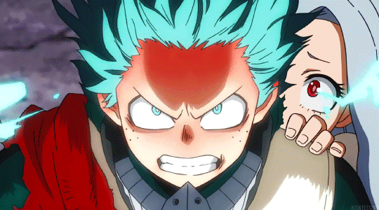

All Might (Toshinori Yagi) é o ex-herói nº 1 e "Símbolo da Paz" em My Hero Academia.
Caracterizado por um físico imponente, sorriso constante e trajes baseados nas cores
dos EUA, ele é o 8º usuário da individualidade One For All

Izuku Midoriya, conhecido como "Deku", é o protagonista de My Hero Academia.
Inicialmente um garoto tímido, inseguro e sem individualidade, ele se
um herói corajoso e analítico após herdar o One For All de All Might